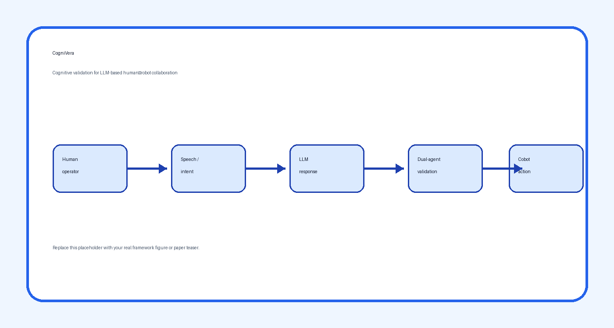

Dual-agent validation
A cognitive validation mechanism checks LLM-generated outputs before they are used in collaborative robot interaction.
IEEE Access, Vol. 13, pp. 77418–77430, 2025
CogniVera: cognitive validation for reliable LLM-based human–robot collaboration.
1FAST-Laboratory, Faculty of Engineering and Natural Sciences, Tampere University, Tampere, Finland
2Faculty of Information Technology and Communication Sciences, Tampere University, Tampere, Finland

CogniVera validates LLM responses for vocal human–robot collaboration tasks, reducing context-induced hallucination risks.
The recent leap in Large Language Models (LLMs) has opened new opportunities for human-robot collaboration (HRC), particularly through natural vocal interaction between human operators and collaborative robots. However, LLMs remain vulnerable to context-induced errors, misleading information propagation, and hallucinations, which can be problematic in safety- and accuracy-critical industrial settings. This paper introduces CogniVera, a framework that integrates a dual-agent cognitive validation system to validate LLM-generated responses during collaborative robot tasks. The approach is evaluated through a focused box-assembly case study using vocal communication, aiming to improve the reliability and practical use of LLMs in human-robot collaboration.
A cognitive validation mechanism checks LLM-generated outputs before they are used in collaborative robot interaction.
The system supports vocal communication between human operators and a collaborative robot for assembly tasks.
The paper focuses on a box-assembly task to evaluate feasibility in practical human–robot collaboration.
Artificial intelligence, human–robot interaction, large language models, conversational AI, human–robot collaboration.
This work was supported in part by the Finnish Doctoral Program Network in Artificial Intelligence (AI-DOC), under Grant VN/3137/2024-OKM-6, and in part by the European Union’s Horizon Europe research and innovation programme under Grant Agreement No. 101058589, corresponding to the AI-Powered human-centred Robot Interaction for Smart Manufacturing (AI-PRISM) project.
@article{ranasinghe2025large,
title = {Large Language Models in Human–Robot Collaboration With Cognitive Validation Against Context-Induced Hallucinations},
author = {Ranasinghe, Nadun and Mohammed, Wael M. and Stefanidis, Kostas and Martinez Lastra, Jose L.},
journal = {IEEE Access},
volume = {13},
pages = {77418--77430},
year = {2025},
doi = {10.1109/ACCESS.2025.3565918}
}